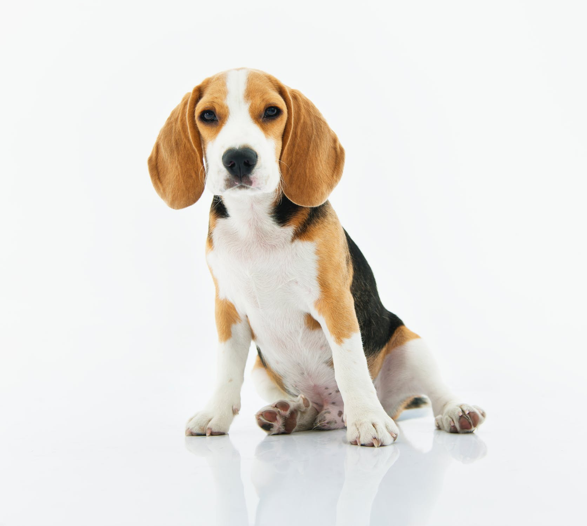

Pembroke Welsh Corgi

The Pembroke Welsh Corgi (/ˈkɔːrɡi/; Welsh for "dwarf dog") is a cattle herding dog breed which originated in Pembrokeshire, Wales. It is one of two breeds known as a Welsh Corgi. The other is the Cardigan Welsh Corgi, and both descend from the line that is the northern spitz-type dog (examples include that of the Siberian Husky). Another theory is that Pembrokes are descended from the Swedish Vallhunds, which were crossed with the local Welsh herding dogs. The Pembroke Welsh Corgi is the younger of the two Corgi breeds and is a separate and distinct breed from the Cardigan. The corgi is one of the smallest dogs in the Herding Group. Pembroke Welsh Corgis are famed for being the preferred breed of Queen Elizabeth II, who has owned more than 30 during her reign. These dogs have been favored by British royalty for more than seventy years, but among the British public, have recently fallen into decline in terms of popularity and demand.
Beagle
The beagle is a breed of small hound that is similar in appearance to the much larger foxhound. The beagle is a scent hound, developed primarily for hunting hare (beagling). With a great sense of smell and superior tracking instinct, the beagle is employed as detection dog for prohibited agricultural imports and foodstuffs in quarantine around the world. The beagle is intelligent but single-minded. It is a popular pet due to its size, good temper, and lack of inherited health problems.
Siberian Husky

The Siberian Husky (Russian: Сибирский хаски, lit: Sibirskiy Haski) is a medium size working dog breed that originated in Northeast Asia. The breed belongs to the Spitz genetic family. With proper training, they make great home pets and sled dogs. It is recognizable by its thickly furred double coat, erect triangular ears, and distinctive markings.